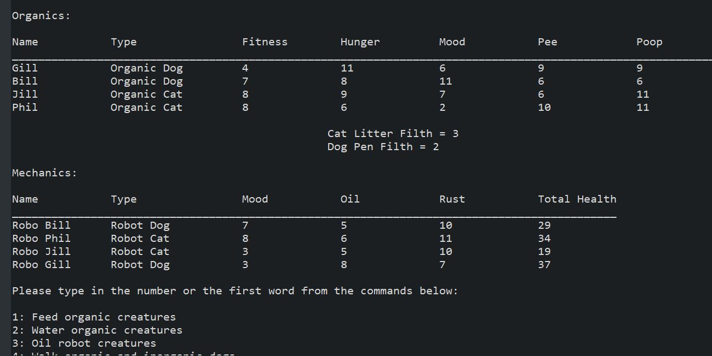
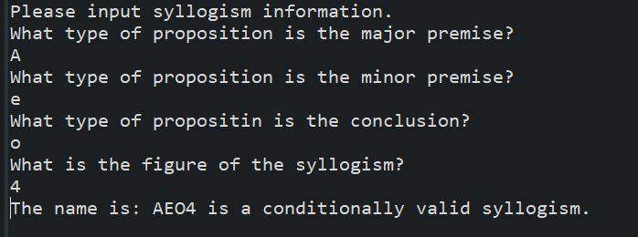
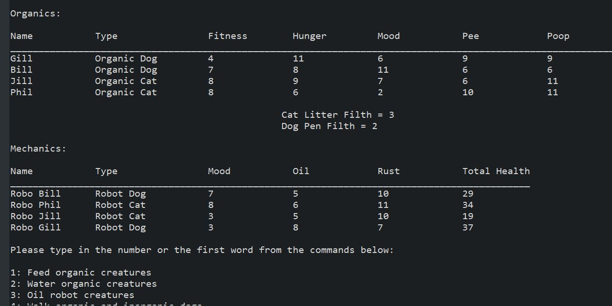
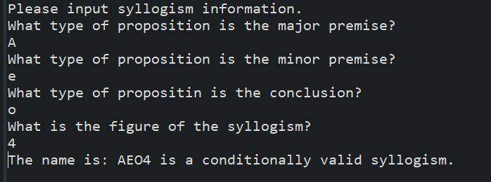

Technologies: Java, Python, HTML5, CSS, Grid, Flexbox, JavaScript, Thymeleaf, Spring
Visit my sample repositories!
Virtual Pets
Reviews

Syllogisms
Junior Developer

Visit my sample repositories!
Virtual Pets
Reviews
Syllogisms
